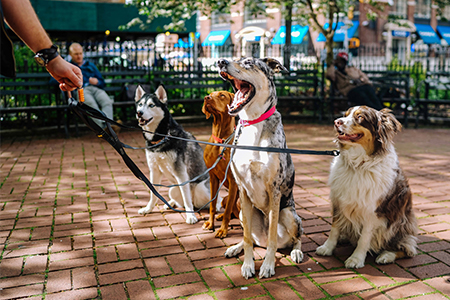
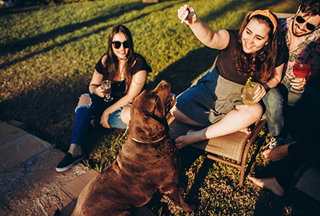

Get Walking San Diego!
Join us for the best walk you will take all year and help pets and wildlife in need! Together, we can create a more humane San Diego! We are excited to be back together in person at the
Walk for Animals — San Diego on Saturday, May 7, at NTC Park at Liberty Station in San Diego!
Your participation helps make San Diego Humane Society's lifesaving work possible.
Dogs can run free in a designated unleashed area for small and big dogs, compete in one of our pet friendly contests, relax in one of our lounges, or participate in one of the unique activities we will be providing for your pleasure.
Enjoy the day with your family while eating awesome food, sipping on a tasty beverage, or shopping local boutique vendors.
Soak up the sunshine while listening to tunes by local artists all day long with bayside views, or dance the afternoon away with your pup with puppy minded music for everyone to enjoy.

Together, we can provide animals with shelter and lifesaving medical care, help families adopt new pets, rescue animals from cruelty and neglect, and so much more. In the coming year, we will care for more than 40,000 animals in need!
By joining the Walk for Animals, you'll help give each one the second chance they deserve.